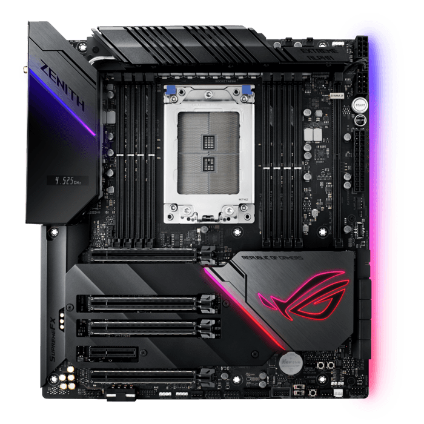
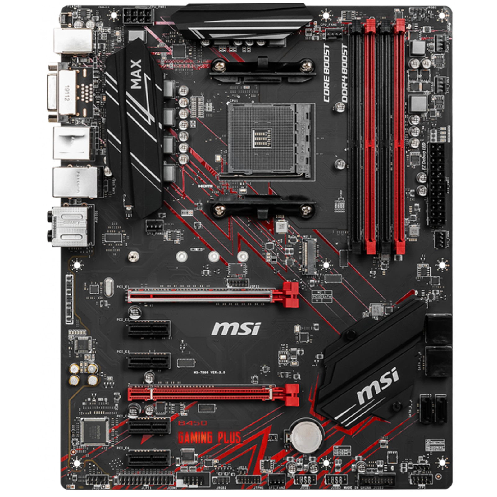
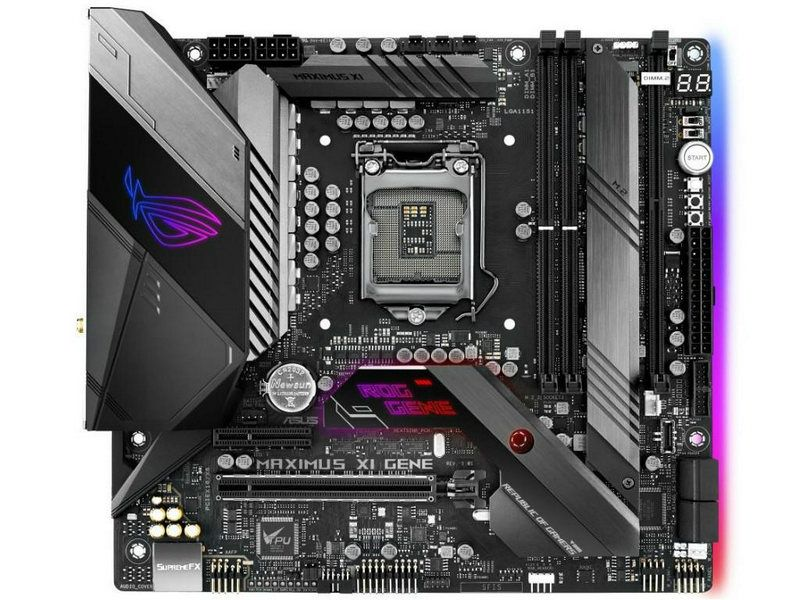
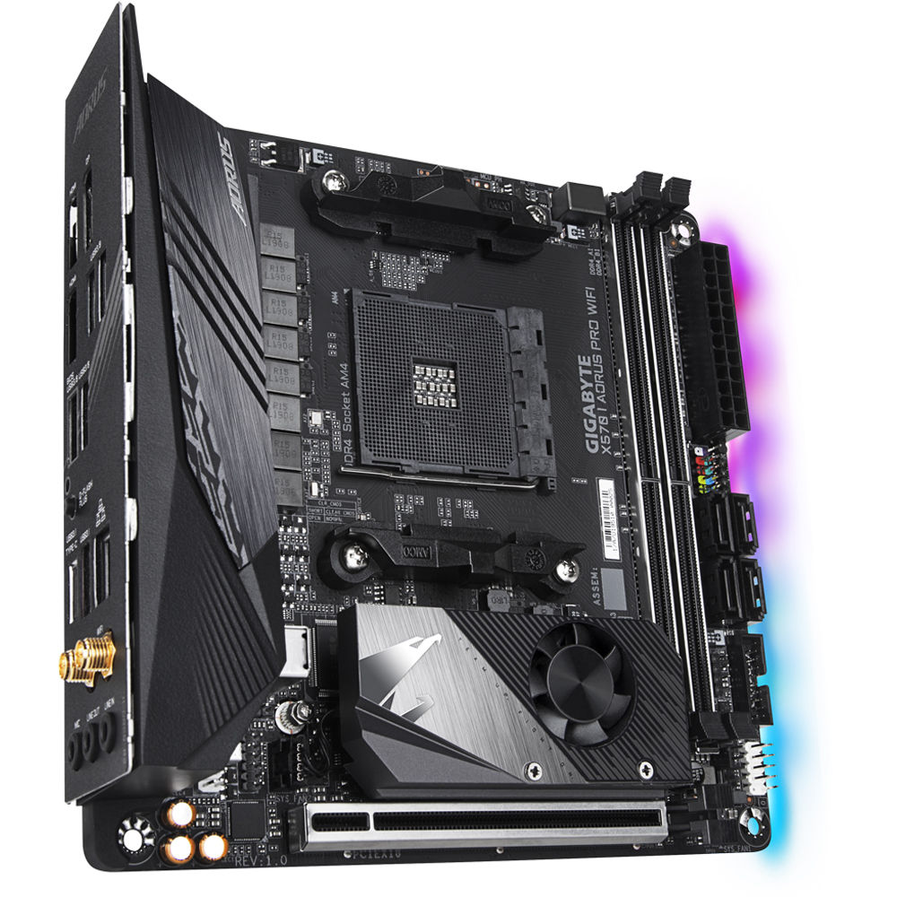

Aunque la mayoría de veces la gente solo varea el tamaño de tarjeta madre para acoplarse al tamaño del gabinete, hay que saber que el tamaño de ella si afecta a sus propiedades sobre todo por el tamaño E-ATX y Mini-ATX.
E-ATX
Las tarjetas E-ATX no son tan comunes, por esto mismo, la gente no pone atención en ciertos detalles, como el ancho de la tarjeta, esta es muy ancha, esto hace que no sea compatible con muchos gabinetes, pero el que sea tan grande no del todo malo. Gracias a su tamaño esta nos permite colocar asta el doble de memorias RAM que puede usar una ATX, un total de asta 8, también permite el uso de múltiples GPUs y por esto, es que en su mayoría este tamaño de tarjeta madre esta dedicada o la usan más las estaciones de o Jugadores de videojuegos, con un gran presupuesto.
Sus dimensiones son de 305 x 330 mm (aunque pueden varear de cuerdo al fabricante y el modelo).

ATX
Este formato de tarjeta tiene unas dimensiones de 305 x 244 mm (aunque algunos fabricantes de tarjetas emplean medidas algo menores), y se ha acabado convirtiendo en estándar de facto por el que se realiza la producción de placas base del mercado.
El uso de estas tarjetas es muy variado, no habiendo un uso típico. Por lo tanto, es normal encontrar este tipo de placas tanto en sistemas de oficina, como en equipos para trabajar o equipos gaming y puede soportar asta 4 memorias RAM.
En general, las tarjetas madre en formato ATX se suelen considerar «gama media». Y, por lo general, este factor de forma es el más empleado por la mayoría de usuarios domésticos.

Micro-ATX
Como un factor de forma evolucionado del antes mencionado ATX, pero un 25% más pequeño (sus dimensiones son de 244 x 244 mm). De hecho, este formato de placa base se desarrolló par ser expresamente compatible con las ATX.
Generalmente, este tipo de placas es muy usada para ordenadores de oficina y para ordenadores de pequeño tamaño, como los que se montan en las cajas HTPC o ciertas configuraciones gaming de bajo coste. También tienen espacio para la instalación de hasta 2 módulos de RAM. Aunque algunos modelos pueden llegar hasta 4 ranuras para la RAM.

Mini-ATX
Sus dimensiones habituales son de 170 x 170 mm y sus cuatro taladros suelen coincidir con los cuatro situados en la parte izquierda y central que emplean las placas en formato ATX.
Estas placas suelen estar muy integradas, con una gran densidad de componentes por cm2. Dado que todo está tan junto, hay muchas veces que la instalación de disipadores de grandes dimensiones acaba creando problemas de compatibilidad con la tarjeta gráfica o con la memoria RAM.
Estas placas solo llevan una ranura para tarjetas de expansión y es habitual que lleven solo dos ranuras para memoria RAM.

Se refiere a tarjetas como una GPU o de red.